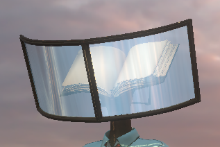

一、项目概述
本合集汇集了我在视觉效果开发领域的多项探索与实践，涵盖材质系统、粒子特效、环境效果和动画效果等多个方向。通过这些项目，我深入研究了实时渲染技术、着色器编程、粒子系统设计等核心技能，为游戏、影视和虚拟现实场景创建了丰富多样的视觉效果。
技术栈涵盖 Unity/UE5 引擎、ShaderGraph、HLSL 着色器编程、SP、SD等工具，形成了一套完整的视觉效果开发工作流程。本合集共包含46个视频演示，全面展示各类视觉效果的开发成果。
二、材质系统开发（9个视频/图片）
材质是视觉效果的基础，决定了物体表面的视觉表现。以下是我开发的主要材质效果：
2.1 宝石材质系列
发光翡翠
实现翡翠的绿色发光效果，模拟了次表面散射，展现宝石内部光线传播的自然美感。
蓝宝石
经典蓝色宝石材质，具有高折射率和内部反射，呈现深邃的蓝色光泽。
绿宝石/蓝水晶
多种宝石材质效果，探索不同颜色和光学特性的实现方法。
钻石
高折射率的钻石材质，具有强烈的折射效果和璀璨的光芒。
2.2 卡通材质开发
柔和的卡通材质
平滑的色彩过渡，适合卡通角色渲染，营造温馨可爱的视觉风格。
卡通硬阴影
清晰的轮廓边缘，增强卡通效果的视觉冲击力。
2.3 角色材质系统
天鹅舞裙角色材质
包含中间抹胸、中间裙子、人台、最外层上衣、最外层裙子、最里层抹胸、最里层蕾丝裙子、束腰、正菱形宝石、爱心钻石、玻璃水晶、羽毛、翅膀、金属、长菱形宝石等多种材质，用于制作芭蕾舞裙配天鹅舞裙角色。
UnityFur皮毛系统
集成了UnityFurURP皮毛渲染插件，用于实现角色的毛发效果。
特殊Shader
使用Shader Graph开发了束腰、羽毛、金属等特殊效果Shader，以及水钻、绒毛、菱形水晶、细纱、钻石等透明和半透明材质。
2.4 材质效果展示
次表面发光翡翠1
次表面散射效果第一版
次表面发光翡翠2
次表面散射效果第二版
蓝宝石
经典蓝色宝石材质
绿宝石
绿色宝石材质
蓝水晶
蓝色水晶材质
钻石
高折射率钻石材质
柔和的卡通材质
开发平滑过渡的卡通材质
卡通硬阴影
实现清晰边缘的卡通轮廓效果
塑料材质
展示塑料材质的效果

三、粒子特效开发（11个视频）
粒子特效是增强场景视觉冲击力的关键元素，以下是我开发的主要特效：
3.1 核心特效类型
发光消散特效
通过粒子系统和shader实现物体发光并逐渐消散的效果，模拟真实的能量消散过程。
火焰燃烧特效
多层粒子和颜色渐变模拟真实的火焰燃烧过程，具有逼真的视觉效果。
线条聚合特效
程序化生成线条并控制其运动轨迹，实现线条聚合和扩散的动态效果。
风格化灯光和积雪
探索风格化的灯光效果和积雪特效，为场景增添独特的视觉风格。
3.2 粒子特效展示
发光消散特效
实现物体发光并逐渐消散的效果
火焰燃烧
模拟真实的火焰燃烧过程
线条聚合
程序化生成线条聚合效果
粒子消散
粒子消散效果演示
粒子包裹
粒子系统包裹效果
火星粒子
火星粒子特效效果
星星粒子
星星粒子特效效果
方块粒子
方块粒子特效效果
粒子闪烁
粒子闪烁特效效果
粒子频闪
粒子频闪特效效果
风格化灯光和积雪特效
风格化灯光和积雪效果演示
四、环境效果开发（7个视频）
环境效果是构建游戏氛围的重要元素，能够大大增强场景的沉浸感：
4.1 环境效果类型
水面效果
模拟水面的反光、透明度和波动效果，使用噪声纹理和正弦函数实现真实的水面波动。
冰面效果
实现冰面的特殊视觉效果，包含结冰柱和解冻过程。
动态草
模拟草的生长和随风飘动效果，使用噪声纹理和风向参数实现自然的摆动。
雪的消融
模拟物体溶解的过程，通过shader实现渐变消失效果。
天空盒效果
实现动态的天空和云朵效果，创造沉浸式的环境氛围。
4.2 环境效果展示
天空盒效果
动态的星空效果，创造沉浸式的环境氛围
基础水面1
模拟水面的反光和透明度效果
水面
水面效果展示
水面效果
另一个水面效果演示
冰面1
冰面效果演示
雪的消融
模拟物体溶解的过程
动态草
模拟草的生长和随风飘动效果
五、动画效果开发（8个视频）
动画效果为场景增添生动的动态表现，以下是主要的动画类型：
5.1 动画效果类型
水面动画
展示水面的波动动画效果，具有平滑的波动形态和颜色变化。
泡泡动画
通过粒子系统和物理模拟实现泡泡的上升和破裂效果。
星星动画
实现星星的闪烁和移动效果，具有随机的大小、颜色和闪烁频率。
电流动画
通过材质动画和粒子系统实现多种电流和跳电效果。
5.2 动画效果展示
泡泡
展示泡泡的上升和破裂效果
星星
展示星星的闪烁和移动效果
排线
展示线条的排列和动画效果
单根电
单根电流效果演示
单线电流1
单线电流效果第一版
电2
另一个电流效果演示
持续的单线电流1
持续的单线电流效果
跳电
跳电效果演示
六、其他效果开发（11个视频）
除了上述主要方向，还探索了多种独特的视觉效果：
6.1 特色效果类型
单色/双色材质
简化的色彩方案，突出卡通风格的艺术表现力。
电路板效果
通过线条和着色器实现电路板的视觉效果，具有细节处理和颜色调整。
HLSL初步尝试
进行HLSL着色器编程的初步尝试，为高级效果开发打下基础。
卡通云/屏保/屏幕扰动
探索多种有趣的视觉效果，为场景增添独特的视觉风格。
6.2 其他效果展示
单色
单色材质效果
双色
双色材质效果
HLSL初步尝试
展示HLSL着色器编程的初步尝试效果
电路板
展示电路板的视觉效果
卡通云
展示卡通风格的云朵效果
屏幕扰动
展示屏幕扰动效果
屏保
屏保效果演示
按键效果
按键效果演示
结冰柱
结冰柱效果演示
解冻
解冻效果演示
地狱酒店
地狱酒店项目相关效果
乱线效果
乱线特效效果
七、技术难点与解决方案
7.1 视觉真实感
难点：如何使视觉效果看起来更加真实自然？
解决方案：使用多层粒子系统、颜色渐变、噪声纹理和物理模拟等技术，模拟真实世界的物理现象。例如火焰的燃烧、水面的波动、草的摆动等效果，都需要考虑物理规律和自然特性。
7.2 性能优化
难点：复杂的视觉效果往往伴随着性能开销，如何在保证效果质量的同时优化性能？
解决方案：使用对象池技术、LOD（细节层次）系统、GPU实例化等方法优化粒子系统和渲染性能，确保效果在不同设备上都能流畅运行。
7.3 交互性与可控性
难点：如何让视觉效果与游戏逻辑实现交互？
解决方案：通过脚本控制粒子系统参数、材质属性和动画状态，实现根据玩家动作触发不同效果的功能。
7.4 着色器开发
难点：如何实现复杂的视觉效果而不影响性能？
解决方案：合理使用ShaderGraph和HLSL编程，优化着色器代码，避免不必要的计算开销。
八、总结与展望
通过这些视觉效果开发项目，我系统地掌握了材质系统、粒子特效、环境效果和动画效果的开发技术。本合集共包含47个演示，全面展示了各类视觉效果的开发成果：
- 材质系统开发：9个视频/图片，涵盖发光翡翠、蓝宝石、绿宝石、蓝水晶、钻石、卡通材质、塑料材质等
- 粒子特效开发：11个视频，涵盖发光消散、火焰燃烧、线条聚合、各种粒子效果等
- 环境效果开发：7个视频，涵盖水面、冰面、雪的消融、动态草、天空盒等
- 动画效果开发：8个视频，涵盖泡泡、星星、各种电流动画等
- 其他效果开发：12个视频，涵盖单色双色、HLSL、电路板、卡通云、屏幕扰动、屏保、按键效果、地狱酒店、乱线效果等
这些经验不仅提升了我的技术能力，也为游戏和影视场景的视觉表现提供了丰富的解决方案。
未来计划：
- 深入研究光线追踪和全局光照技术，提升画面真实感
- 探索机器学习在视觉效果生成中的应用
- 开发更多创新的视觉效果，拓展技术边界
- 优化现有效果的性能，提升运行效率
- 尝试将这些技术应用到虚拟现实和增强现实场景中
视觉效果开发是一个持续探索和创新的领域，我将继续学习和实践，不断提升自己的技术水平。